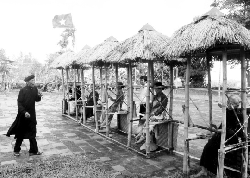
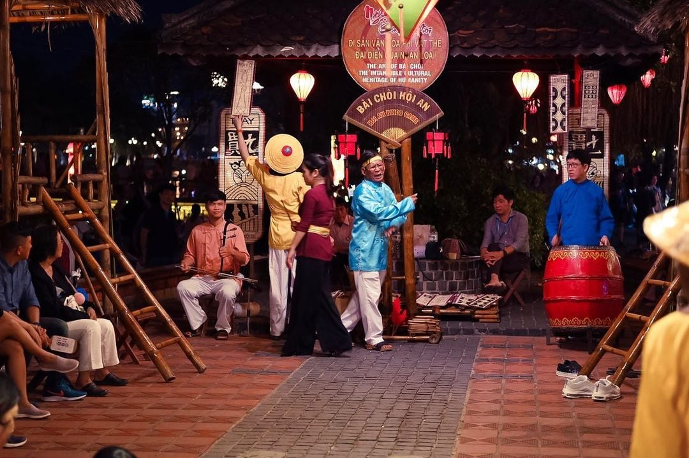

Nguồn Gốc Hát Bài Chòi
Hát Bài Chòi là một loại hình nghệ thuật dân gian độc đáo của Việt Nam, có nguồn gốc từ miền Trung. Từ lâu đời, Hát Bài Chòi đã gắn bó với người dân qua những dịp lễ hội, tết cổ truyền và các dịp vui chơi. Nghệ thuật này không chỉ là một trò chơi dân gian mà còn là hình thức truyền tải những giá trị văn hóa, tinh thần của người Việt.
Nguồn gốc của Hát Bài Chòi được cho là xuất phát từ những làng chài ven biển miền Trung, nơi người dân sử dụng các chòi để canh giữ và bảo vệ mùa màng. Dần dần, người dân biến các chòi này thành nơi tụ tập, hát hò và chơi đùa, tạo nên một loại hình nghệ thuật dân gian mới mẻ.
Trải qua nhiều thế kỷ, Hát Bài Chòi đã phát triển và trở thành một phần không thể thiếu của đời sống văn hóa Việt Nam, đặc biệt là ở các tỉnh miền Trung như Quảng Nam, Bình Định, Phú Yên, và Khánh Hòa.
Giáo sư Hoàng Chương – Tổng Giám đốc Trung tâm Bảo tồn và phát huy văn hóa dân tộc, người đã có hàng chục năm tìm hiểu và nghiên cứu nghệ thuật bài chòi cho rằng: “Cho đến nay, vẫn chưa tìm thấy văn bản nào có ghi lại nguồn gốc ra đời của nghệ thuật bài chòi. Tuy nhiên, qua truyền thuyết dân gian, qua lời kể của những nghệ nhân cho thấy, nguồn gốc và sự ra đời của nghệ thuật bài chòi gắn liền với cuộc sống sinh hoạt của nhân dân lao động”. Bắt nguồn từ quá trình lao động sản xuất và sự sáng tạo, trong nhiều thế kỷ qua, nghệ thuật Bài chòi đã dần trở thành nếp sinh hoạt văn hóa, là món ăn tinh thần không thể thiếu của người dân miền Trung.